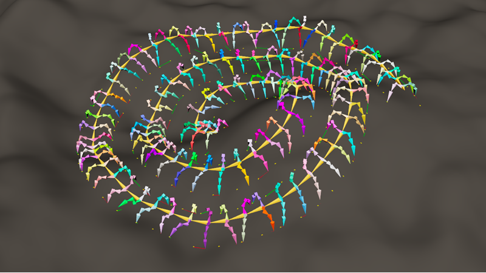
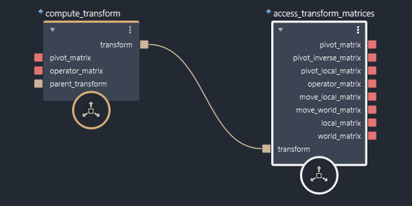
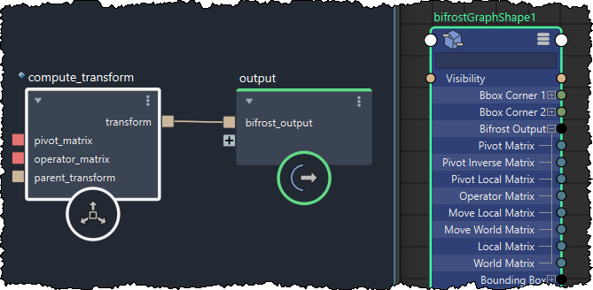

Bifrost 包含一些基本工具，可帮助完成程序绑定任务。其核心是一个极简变换模型，由 Core::Core::Transform 数据类型及其相关节点实现。为了对它们的工作原理有一个基本的了解，请查看 Bifrost 浏览器中的“绑定”(Rigging)示例图表。
Transform 类型Core::Core::Transform 类型由一组 4×4 双精度矩阵组成，这些矩阵可以一起更新。

| 矩阵 | 描述 | 公式 |
|---|---|---|
| 枢轴 | 图表的世界空间中的静止姿势。这通常是静态值。 | P（直接输入） |
| 枢轴反转 | 世界空间中静止姿势的反转。 | P-1 |
| 枢轴局部 | 变换父对象的局部空间中的静止姿势。 | PL = PP-1 × P |
| 运算符 | 对缩放、旋转和平移的累积更改。这通常是动画值。 | O（直接输入） |
| 移动局部 | 应用于枢轴空间的运算符。例如，如果枢轴在 X 轴方向旋转 90 度，则 Y 轴上的运算符平移会导致 Z 轴上的移动平移。 | ML = P × O × P-1 |
| 移动世界 | 由于所有运算符应用于层次中的变换而导致的世界空间变化。 | MW = MWP × ML |
| 局部 | 父对象局部空间中的动画姿势。 | L = PL × O |
| 世界 | 世界空间中的动画姿势。 | W = MW × P |
除了 pivot_matrix 和 operator_matrix 输入之外，compute_transform 节点还需要从父对象的变换中提取的以下两个矩阵。这些矩阵不直接包含在变换的数据中。
| 矩阵 | 描述 | 公式 |
|---|---|---|
| 父枢轴反转 | 父对象枢轴的反转。 | PP-1（直接输入） |
| 父移动世界 | 父变换的移动世界矩阵。 | MWP（直接输入） |
可以使用 update_transform 节点更新 Transform 值中的所有矩阵。您选择的更新方法决定是将输入解释为新的局部、世界、运算符还是枢轴矩阵。
将 Transform 值输出到场景时，其成员矩阵可直接用于在场景图形中进行连接。您不需要单独提取和输出这些矩阵。

Transform 类型也可以自动升级为 double4x4 矩阵。这意味着，您可以将变换值直接插入到接受此类矩阵的端口，并且将使用世界矩阵值。
链是一个由 4x4 矩阵或变换组成的数组，其中每个矩阵或变换被视为数组中下一个矩阵或变换的父对象。您可以使用 compute_transform chain 节点轻松地从匹配的枢轴和运算符矩阵数组创建变换链。ik_fk_solver 节点是一个解算器示例，可以对双骨骼链执行反向运动学。有关如何使用链的其他一些示例，请参见 Bifrost 浏览器的“绑定”(Rigging)类别中的 resample_matrix_chain 和 compute_transform_chain 图表。
变换树与链类似，都是变换的平面数组，但需要额外的 parent_indices 或 joint_parent_index 数组来定义树拓扑。父索引必须引用数组中的较早元素，或者在根关节或孤立关节的情况下，父索引必须等于 invalid_index 的输出。
骨架是一个类似几何体的对象，由关节树组成。可以使用 construct_skeleton 从枢轴矩阵数组和相应的父索引数组创建骨架。或者，也可以使用 create_skeleton_from_paths 从由斜杠 (/) 分隔的字符串组成的数组构造骨架。
要了解如何使用骨架，请查看 Bifrost 浏览器的“绑定”(Rigging)类别中的以下图表：
dancing_skeletonmaya_skeleton_to_bifrostusd_skeleton_animationusd_skeleton_skinningwalking_centipede